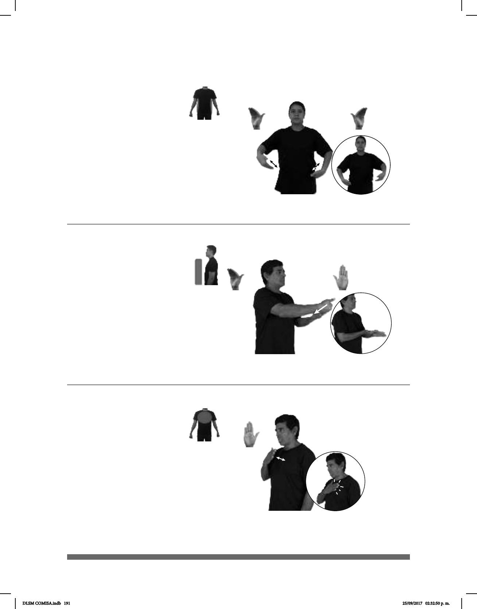

191
(B-P 241)
(B-P 242)
dm-MARÍA dm-DANIEL pro-DOS-DE-ELLOS IR TEATRO
María y Daniel van al teatro.
TORTA POLLO pro-YO GUSTAR
Me gusta la torta de pollo.
Seña: SB
MD y MB B-P.8
MD palma oblicua hacia
la izquierda y hacia arriba. MB palma
oblicua hacia la derecha y hacia arriba.
MD y MB sobre las
caderas.
MD y MB simulan varios
saltos alternadamente.
1. sust. m. Arte de
representar mediante la actuación
por lo general basados en un texto. 2.
representación de obras dramáticas o a
otros espectáculos públicos propios de
la escena.
Seña: SB
MD B-P.8, MB
B-P.2
MD la palma inicia
hacia adentro y termina hacia arri-
ba. MB palma hacia arriba.
A la altura del pecho.
MD sobre MB.
La MD se mueve
formando un arco hacia la derecha
mientras la muñeca gira y cambia
la orientación de la palma.
sust. f. Panecillo
partido longitudinalmente que se
rellena con diversos alimentos.
(B-P 243)
INVIERNO dm-JOSÉ TOS ENFERMAR
José se enfermó de tos en invierno.
Seña: SM
B-P.2
Palma hacia adentro.
A la altura del pecho.
La mano simula
varios saltos.
Boca
entreabierta, punta de la lengua
hacia afuera.
sust. f. Movimiento
convulsivo y ruidoso del aparato
respiratorio.
DLSM COMISA.indb 191 25/09/2017 02:32:50 p. m.